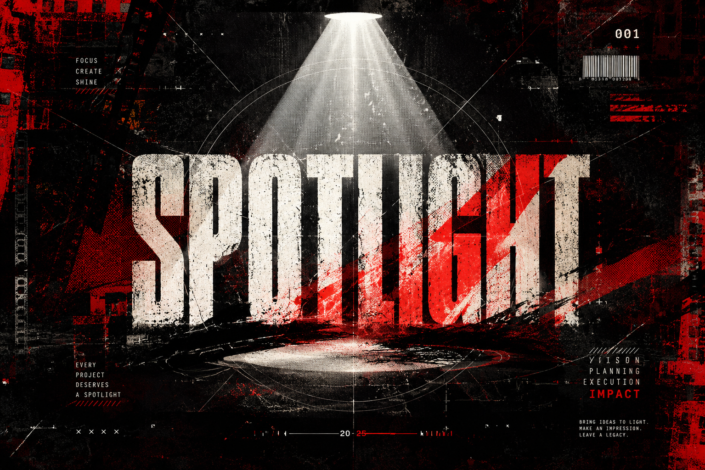
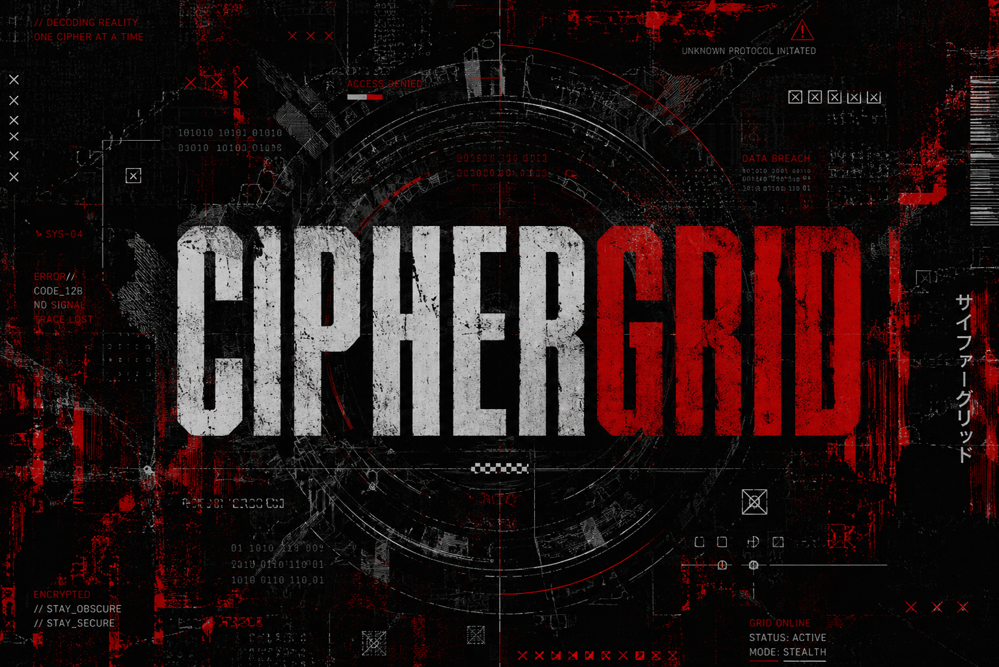
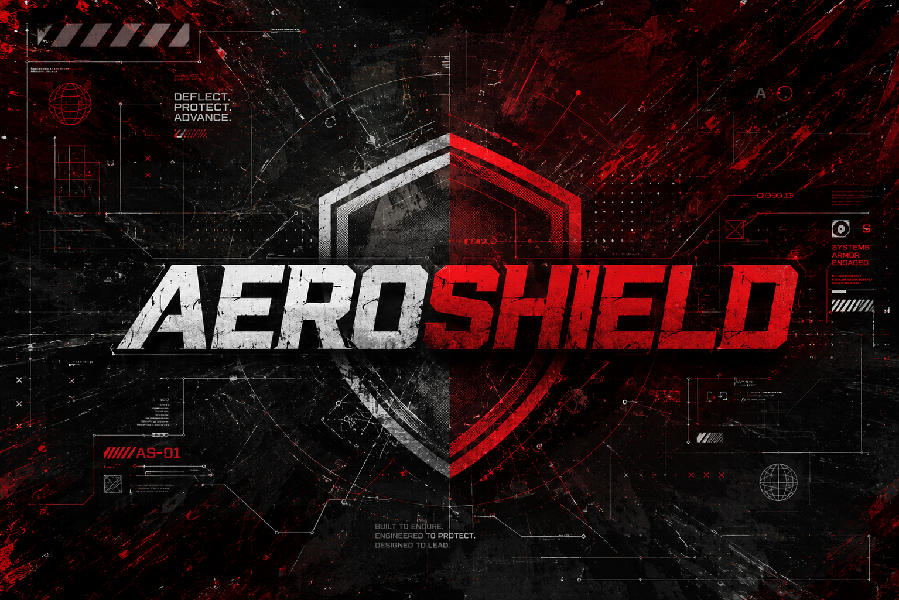

VIEW PROJECT ↗Selected work
PROJECTS
/ CASE FILES.
Open a project to move through its image set without leaving the page.

VIEW PROJECT ↗
VIEW PROJECT ↗Open a project to move through its image set without leaving the page.

VIEW PROJECT ↗
VIEW PROJECT ↗
VIEW PROJECT ↗